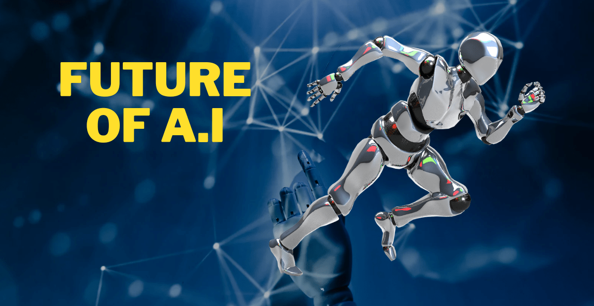

What is Artificial intelligence? benefits, uses, future of AI
Last modified - 19-01-2023
Now a days the term Artificial intelligence is getting popular, you may have heard about A.I on internet, social
media, news or somewhere else. If you are using modern technology then you might have heard that Artificial
intelligence could end mankind, but what is Artificial intelligence? So, Artificial intelligence (AI) is the
simulation of human intelligence in machines that are programmed to think and learn. It encompasses a wide range
of technologies, including machine learning, natural language processing, and computer vision, among others.
These technologies enable machines to perform tasks that would typically require human intelligence, such as
recognizing speech, understanding natural language, and making decisions.
How Artificial intelligence works?
AI systems work by using algorithms to process and analyse data, and then make decisions or predictions based on
that data. There are a few different types of algorithms that are commonly used in AI:
- Rule-based systems: These systems use a set of predefined rules to make decisions. They are relatively
simple and easy to understand, but can be inflexible and unable to adapt to new situations.
- Decision tree algorithms: These algorithms use a tree-like structure to represent decisions and their
possible consequences. They are able to handle more complex problems than rule-based systems, but can still
be limited in their adaptability.
- Artificial neural networks: These algorithms are modelled after the structure and function of the human
brain. They are able to learn and adapt to new situations, and are often used for tasks such as image and
speech recognition.
- Deep Learning: It is a subset of machine learning and artificial neural networks that uses multiple layers
to extract features and make decisions.
- In general, AI systems are trained on large sets of data, and use that training to make decisions or
predictions about new data. The more data an AI system has been trained on, and the more diverse that data
is, the better its performance will be.
What are the benefits of Artificial intelligence?
There are many benefits of AI, some of those are:
- Increased efficiency: AI systems can process and analyse data much faster and more accurately than humans,
which can lead to increased productivity and cost savings.
- Improved decision making: AI systems can help identify patterns and insights in data that might be difficult
for humans to see, which can lead to better decision making.
- Automation of repetitive tasks: AI systems can automate repetitive and time-consuming tasks, freeing up
humans to focus on more complex and creative work.
- Personalization: AI systems can be used to personalize products and services for individual users, leading
to a better user experience and increased customer satisfaction.
- Predictive maintenance: AI system can predict when equipment is likely to fail, allowing companies to plan
for maintenance and avoid costly downtime.
- Improved safety and security: AI systems can monitor and analyse data from cameras and sensors to detect
potential security threats and alert authorities.
- Healthcare: AI can aid medical professionals in tasks such as identifying diseases and planning treatment,
and it can also help in drug discovery and clinical trials.
- Climate change: AI can aid in the monitoring of natural resources and predicting the effects of climate
change, allowing for more effective conservation and mitigation efforts.
How AI is used in healthcare:
- Medical imaging: AI algorithms can analyse medical images such as X-rays, MRIs, and CT scans, to help
diagnose and monitor diseases such as cancer, heart disease, and neurological disorders.
- Drug discovery and development: AI can help identify potential drug candidates, predict how they will
interact with the body, and improve the efficiency of clinical trials.
- Electronic Health Records (EHRs): AI can be used to analyse EHRs to identify patterns and predict potential
health risks.
- Personalized medicine: AI can be used to analyse a patient's genetic data and medical history to create
personalized treatment plans.
- Virtual health assistants: AI-powered virtual health assistants can help patients manage their symptoms and
answer medical questions.
- Robotic surgery: AI is used to assist surgeons in performing surgeries, for example, in laparoscopic surgery
and the control of robotic arms.
- Predictive analytics: AI can be used to analyse large amounts of patient data to predict which patients are
at risk of developing certain conditions, allowing for earlier intervention and treatment.
- Clinical decision support: AI can be used to help doctors make diagnostic and treatment decisions by
providing them with relevant data and evidence-based guidelines.
How AI is used in business:
- Customer service: AI-powered chatbots and virtual assistants can interact with customers, answer their
questions, and provide support.
- Marketing: AI can be used to analyse customer data and predict buying behaviour, allowing businesses to
create personalized marketing campaigns.
- Sales: AI can be used to predict which leads are most likely to convert to customers, and to optimize sales
processes.
- Supply chain management: AI can be used to optimize inventory management, predict demand, and plan
production schedules.
- Human resources: AI can be used to automate recruitment processes, such as screening resumes, and to analyse
employee data to identify patterns and predict potential performance issues.
- Fraud detection: AI can be used to identify patterns in financial transactions that are indicative of fraud.
- Risk management: AI can be used to identify and evaluate potential risks to a business, such as market
fluctuations or natural disasters.
- Process optimization: AI can be used to analyse data on business processes and identify inefficiencies, and
to develop and implement solutions to improve them.
- Predictive maintenance: AI can be used to predict when equipment is likely to fail, allowing companies to
plan for maintenance and avoid costly downtime.
How AI is used in education field:
- Personalized learning: AI can be used to create personalized learning plans for students based on their
strengths and weaknesses, and to adjust the curriculum to their individual needs.
- Tutoring and teaching: AI-powered virtual tutors and teaching assistants can provide students with
one-on-one instruction, feedback, and support.
- Grading and assessment: AI can be used to grade written assignments, multiple-choice tests, and other forms
of assessment, providing teachers with more time to focus on other tasks.
- Content generation: AI can be used to generate educational content, such as quizzes, exercises, and
simulations.
- Adaptive testing: AI can be used to adapt the difficulty of a test to the student's level of understanding,
providing a more accurate assessment of their knowledge.
- Student monitoring: AI can be used to monitor student engagement and participation in online classes,
providing teachers with insights into how well students are understanding the material.
- Language learning: AI can be used to create language-learning programs that adapt to the student's level of
proficiency and personal learning style.
- Curriculum development: AI can be used to analyse data on student learning outcomes, and help educators to
develop and improve curriculum.
How AI is used automobile industry:
- Self-driving cars: AI is used to control the movement of self-driving cars, allowing them to navigate
roads, avoid obstacles, and make decisions in real-time.
- Advanced driver-assistance systems (ADAS): AI is used in ADAS features such as lane departure warning,
automatic emergency braking, and adaptive cruise control.
- Predictive maintenance: AI can be used to predict when a car's parts will fail, allowing for more efficient
scheduling of maintenance and repairs.
- Personalization: AI can be used to personalize the driving experience for individual users, for example by
adjusting the seat, mirrors and music to their preferences.
- Traffic management: AI can be used to optimize traffic flow and reduce congestion, for example by adjusting
traffic lights and tolls.
- Powertrain optimization: AI can be used to optimize the performance of a car's powertrain, for example by
adjusting the transmission, engine, and hybrid systems.
- Cybersecurity: AI can be used to identify and prevent cyber-attacks on cars and on the networks that
connect them.
- Car retail: AI can be used to personalize the car-buying experience, for example by helping customers to
find the right car and by providing them with financing options.
How AI is used in agriculture:
- Crop monitoring: AI can be used to monitor crop health, identify pests and diseases, and predict crop
yields.
- Precision farming: AI can be used to optimize irrigation systems, apply fertilizers, and control the use of
other inputs.
How AI is used in transportation:
- Traffic management: AI can be used to optimize traffic flow, reduce congestion, and improve road safety.
- Autonomous vehicles: AI can be used to control the movement of autonomous vehicles such as trucks, buses,
and drones.
- Fleet management: AI can be used to optimize the routes, fuel consumption, and maintenance schedules of a
fleet of vehicles.
- Predictive maintenance: AI can be used to predict when a vehicle's parts will fail, allowing for more
efficient scheduling of maintenance and repairs.
So, these were some of the use cases of Artificial intelligence and lets move forward and talk about the future of Artificial intelligence.

The future of Artificial intelligence:
The future of AI is likely to be shaped by a number of factors, including advances in technology, changes in
societal and economic conditions, and the actions of governments and other organizations. Some of the ways in
which AI is likely to evolve in the future are:
- Increased intelligence: AI systems are likely to become more intelligent and capable over time, with the
development of new algorithms and techniques such as deep learning and reinforcement learning.
- Greater autonomy: AI systems are likely to become more autonomous, with the ability to make decisions and
take actions without human intervention.
- More widespread use: AI is likely to be adopted in an increasing number of industries and applications,
leading to more widespread use and impact.
- Human-AI collaboration: AI is likely to be used more frequently in collaboration with humans, in ways that
augment and enhance human capabilities.
- More realistic and human-like AI: AI systems are likely to become more realistic and human-like in their
behaviour, appearance, and communication.
- More ethical and transparent: As AI systems become more prevalent and impactful, there will likely be
increased focus on ensuring that they are designed, developed and used ethically, and that their
decision-making processes are transparent to users.
- More data-driven: AI is likely to become more data-driven, with the increasing availability of large amounts
of data from sources such as the internet of things and social media.
- More powerful hardware: AI is likely to be supported by more powerful hardware, such as quantum computers,
neuromorphic chips, and specialized processors for AI tasks.
So, these is how Artificial intelligence works, its use cases and its future. Follow us on our social media handles for more technology related articles and updates.